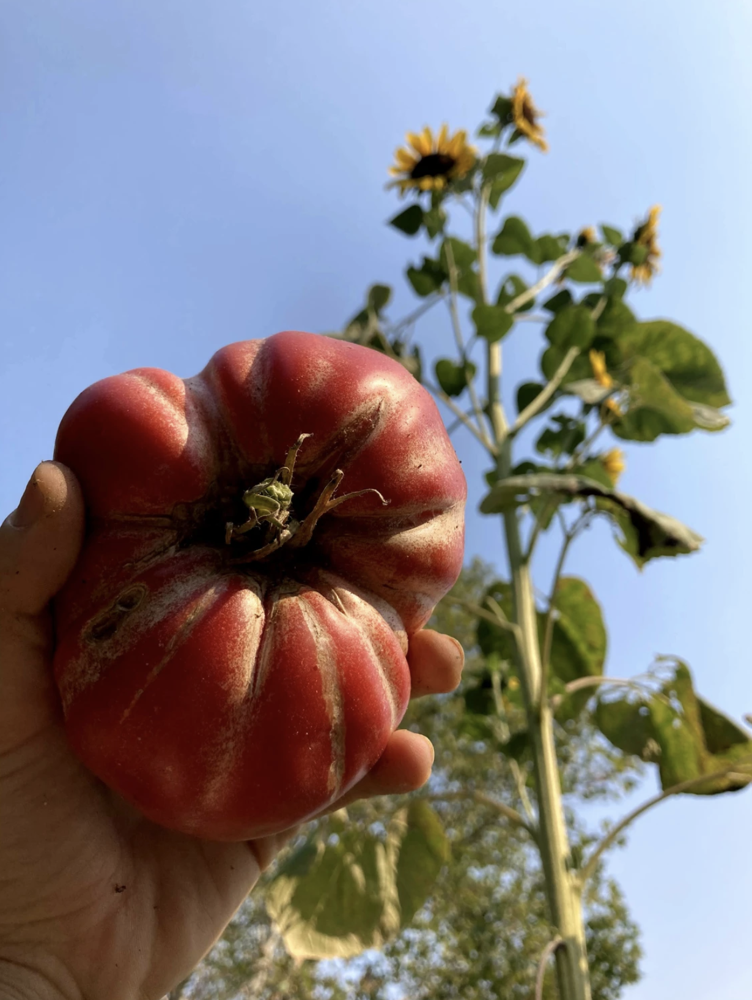

Plant "Menu"

Red and Pink Heirlooms
-
Wood's Famous Brimmer
Developed in the 1920s by W. T. Woods & Sons of Richmond, Virginia, this tomato produces large 3 to 4-inch red fruit of perfect round shape. We are not certain whether this variety was developed as a canning tomato or as a dinner slicer because it makes the perfect BLT sandwich. That said, this tomato variety was created and bred in the Mid-Atlantic region, so it will thrive in our humid Midwestern summers and yield wildly off-the-books quantities of picture perfect monster red tomatoes.
$5.00
-
Brandywine
The most popular heirloom vegetable! A favorite of many gardeners, large fruit with superb flavor. A great potato-leafed variety from 1885! Beautiful pink fruit up to 1½ lbs each!
$5.00
-
Carbon Tomato
Winner of the 2005 “Heirloom Garden Show” best-tasting tomato award. These have won taste awards coast to coast in the last few years. The fruit is smooth, large, and beautiful, being one of the darkest and prettiest of the purple types we have seen. They seem to have an extra dose of the complex flavor that makes dark tomatoes famous.
$5.00
-
Watermelon Beefsteak
Hollister Farms Favorite! Our #1 seller. This heirloom tomato dates back 100 years. Original seed was collected from West Virginia, where it had been grown for almost 100 years by a few mountain families, by the famed seedsman George Gleckler who introduced it in 1958. This is the true Watermelon Beefsteak. Indeterminate, regular-leaf tomato plants that yield HUGE, 1-2 lb., pink, beefsteak tomatoes that are lightly scalloped and loaded with deliciously rich and complex, old-time tomato flavors.
$5.00
-
Armenian
Heirloom originally from Armenia from tomato collector Charlotte Mullens of West Virginia who was the source in 1990. An indeterminate that produces large, 1-lb., lightly ribbed, yellow and orange beefsteak tomato with some red marbling. Unusually strong flavors for a bi-colored.
$5.00
-
Greek Rose
An heirloom tomato originally from Crete. Large, 4", 16 oz., pink beefsteak tomatoes borne from big, sprawling, regular leafed tomato plants. Big, complex flavors. A good sandwich tomato. Rare.
$5.00
Green Heirlooms
-
Green Doctor's Cherry
A favorite green cherry variety, having a good sweetness and yet still has lots of tart flavor. Named after Dr. Amy Goldman and Dr. Carolyn Male, who have both written great tomato books. Fruit is yellowish-lime green with kiwi-green colored flesh. Large vines produce huge yields of these little cherries. Some plants produce bright green fruit; others produce “frosted” fruit, which is lighter in color and even sweeter.
$5.00
-
Grandma Oliver's Green
Heirloom tomato going back to Indiana in the 1920's. Indeterminate, regular leaf plant produces 10-14oz., 3-inch round, olive-green tomatoes that are amber-colored when fully ripe, with a delicious sweet/tangy flavor. Great for slicing or salads or even sauces.
$5.00
-
Lime Green Salad
Small plants that produce abundant sprays of round, lime-green tomatoes that ripen further to an amber color. Great for growing in containers since plants stay small yet provide a big harvest. Fruits are 3 to 5 oz., chartreuse inside, full of juice and a luscious, tangy flavor. A good variety for growing in containers.
$5.00
Yellow and Orange Heirlooms
-
Aunt Ruby's Yellow Cherry
The plants produce indeterminate, regular-leaf, vigorous and tall tomato plants that yield copious amounts of 3/4-inch, round, yellow cherry tomatoes that are loaded with delicious, fruity, sweet/tart flavors. Rare. The perfect snacking tomato that is wonderful in salads or culinary dishes.
$5.00
-
Dad's Sunset
The perfect orange tomato! Large 10-oz. fruit is very smooth, uniform, and a beautiful, glowing orange in color. It keeps very well. One of the best-flavored tomatoes.
$5.00
-
Marvel Stripe
Beefsteak originally from Oaxaca, Mexico. Largest of the bi-colored tomatoes. Indeterminate, regular leaf plant produces 3-4-inch, 1-2 pound, beautiful tomatoes with sweet, mild, fruity flavors. Very popular market tomato.
$5.00
-
Hillbilly
A huge, bi-color heirloom; brilliant yellow color with red marbling. Very large with a rich, sweet flavor. Beautiful when sliced. An heirloom believed to be from West Virginia.
$5.00
-
Summer Sweet Gold
Try this one out! Hollister Farms exclusive. Indeterminate, dwarf produce very high yields of 6-18 oz., large, meaty, light- yellow beefsteak fruits, some with pinkish blush at the blossom end. Outstanding sweet and full flavors. This is Summertime Gold, reselected and improved, but with a new and distinct name. One of the best flavored of all of the dwarf tomatoes.
$5.00
-
Big Tiger
Good yields of medium sized (8 oz.) , yellow-red, bi-colored fruit, Good flavor.
$5.00
Dwarf Heirlooms
-
Firebird Sweet
Fantastic introduction to Hollister Farms! Indeterminate, vigorous dwarf produces 4-8 oz., medium-sized, attractive pink beefsteak fruits with golden stripes that have meaty and juicy flesh, with outstanding full flavor.
$5.00
-
Tasty Wine
Indeterminate, vigorous dwarf (tree-type) plants with potato leaf rugose foliage, produce abundant crops of 6-12 oz., pink beefsteak tomatoes with very few seeds, deliciously sweet, juicy flesh
$5.00
-
Chocolate Lightning
Indeterminate, dwarf ('tree-type') plants with rugose regular leaf foliage produce 4-8 oz., medium-sized, chocolate-brown, slightly-oblate, slicers with jagged green and gold stripes. The rich crimson flesh has intense and well-balanced flavors. Some plants throw out purple/black striped fruits. The vigorous dwarf regular leaf plants are among the taller growing plants of the new dwarf varieties. History: Developed by the members of the Dwarf Tomato Project.
$5.00